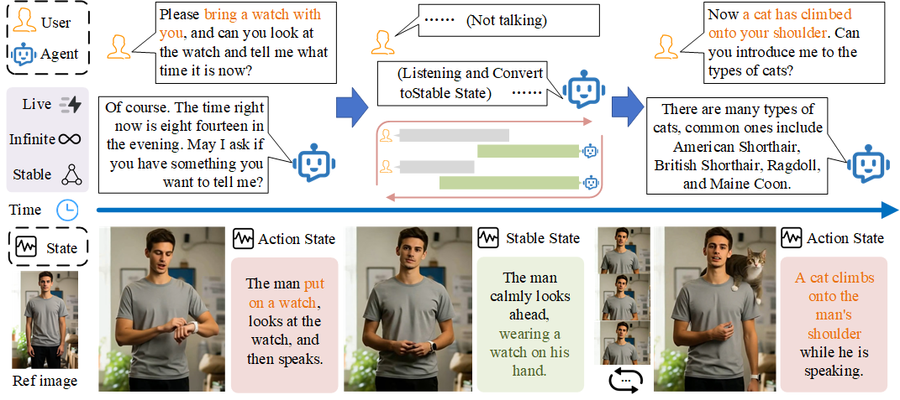
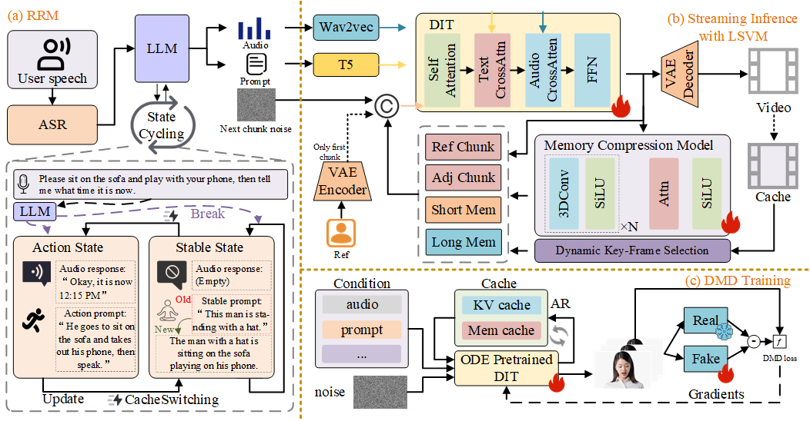
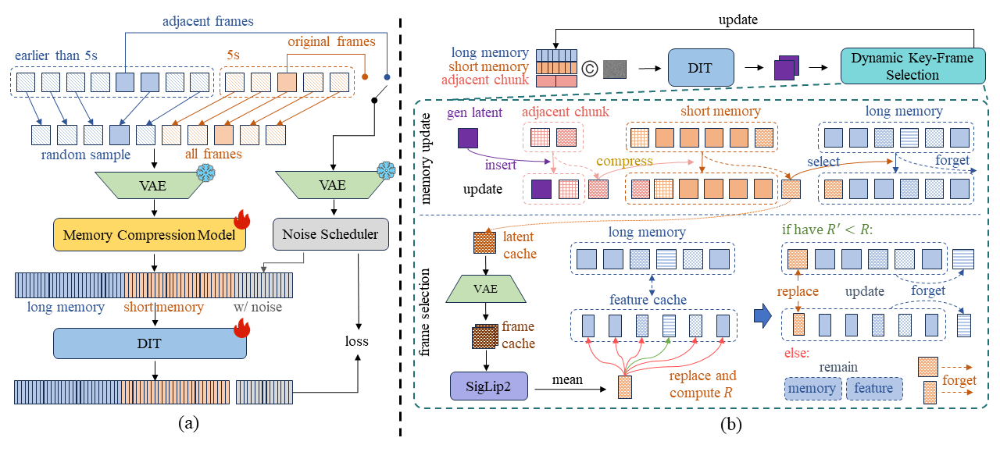
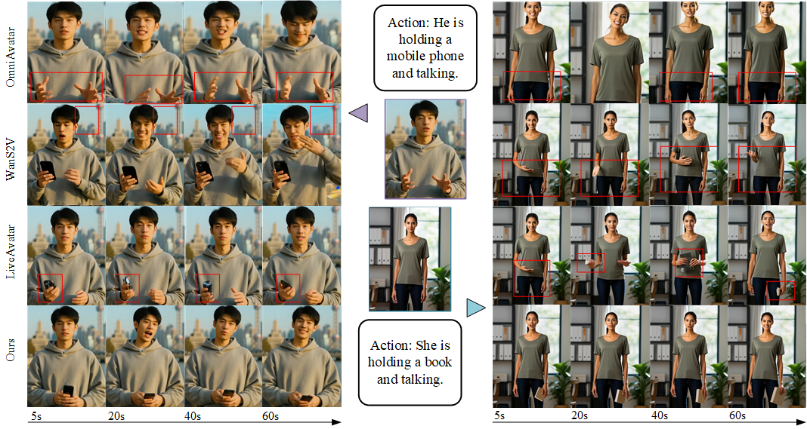

ECCV 2026
★Equal contribution †Corresponding author

We propose InteractiveAvatar, a real-time streaming audio-driven avatar generation framework that enables intent-aware interaction. InteractiveAvatar interprets user intent to generate contextually relevant actions throughout the dialogue while maintaining long-range visual consistency.
Recent diffusion-based models have enabled realistic audio-driven avatar generation in real-time streaming. However, existing approaches struggle to maintain visual temporal consistency and fail to explicitly perceive user intent in complex interactive streaming scenarios. To address these challenges, we propose InteractiveAvatar, a real-time infinite-streaming video generation framework that supports visually consistent avatar video generation and intent-aware interactions. With autoregressive distillation, InteractiveAvatar achieves real-time str-eaming generation of human avatars over arbitrarily long durations. For visual consistency, we introduce a Long-Short Visual Memory (LSVM) mechanism that flexibly compresses historical visual information into compact tokens, preserving both short-range coherence and long-term consistency. To generate avatars with speeches and actions aligned with user intent, we propose a Reasoning-Reaction Module (RRM), which incorporates a State-Cycling strategy and a Cache-Switching mechanism. Extensive experimental results over diverse scenarios demonstrate that our method achieves state-of-the-art visual consistency in long-duration generation, while enabling complex user-avatar interaction in real time.

Overview of InteractiveAvatar, which consists of (a) The Reasoning-Reaction Module (RRM) performs intent-aware interaction with user; (b) Streaming Inference with Long-Short Visual Memory (LSVM) mechanism to enhance the visual consistency; and (c) DMD training for real-time streaming generation.
A novel real-time streaming audio-driven avatar generation framework that supports long-duration video synthesis with strong visual consistency and intent-aware user-avatar interaction. With autoregressive distillation, InteractiveAvatar achieves real-time streaming generation of human avatars over arbitrarily long durations.
Flexibly preserves historical visual representations by jointly modeling short-term and long-term visual information. A Dynamic Key-Frame Selection strategy adaptively transfers critical content from short-term to long-term memory, significantly improving visual coherence in long-duration generation.
Leverages a large language model for intent understanding, equipped with a State-Cycling strategy for smooth listening-execution transitions and a Cache-Switching mechanism to accelerate action execution and scene transitions with reduced latency.

LSVM Mechanism.(a) During training, long-term memory frames are randomly sampled, while short-term memory retains all recent frames. (b) During inference, Dynamic Key-Frame Selection adaptively updates memory to retain critical visual information.

Qualitative comparisons with state-of-the-art methods. Our method exhibits better visual consistency and following of action instructions.
| Model | Video Quality | Consistency | SpeedFPS ↑ | |||||||
|---|---|---|---|---|---|---|---|---|---|---|
| IQA ↑ | ASE ↑ | FID ↓ | FVD ↓ | SynC ↑ | SynD ↓ | OBJ ↑ | ID ↑ | TV ↑ | ||
| StableAvatar | 3.91 | 3.82 | 79.7 | 654.1 | 3.57 | 10.27 | 79.5 | 4.41 | 25.34 | 0.69 |
| OmniAvatar | 3.77 | 3.87 | 94.1 | 831.9 | 4.94 | 7.87 | 82.8 | 4.38 | 24.57 | 0.17 |
| HYAvatar | 3.81 | 3.93 | 76.5 | 632.6 | 4.78 | 8.11 | 78.9 | 4.46 | 25.61 | 0.09 |
| Hallo3 | 3.57 | 3.29 | 112.5 | 1127.6 | 4.21 | 9.74 | 75.1 | 4.31 | 24.92 | 0.28 |
| EchoMimicV3 | 3.96 | 3.89 | 85.2 | 773.9 | 3.89 | 10.09 | 80.3 | 4.45 | 25.56 | 0.81 |
| WanS2V | 3.76 | 3.68 | 88.4 | 793.5 | 4.54 | 8.95 | 82.6 | 4.49 | 25.14 | 0.26 |
| LiveAvatar | 3.94 | 3.91 | 83.9 | 672.7 | 4.91 | 8.17 | 76.9 | 4.53 | 25.78 | 21.94 |
| Ours | 3.87 | 3.89 | 80.2 | 701.4 | 4.86 | 7.91 | 85.2 | 4.51 | 25.93 | 26.68 |
Quantitative comparison with state-of-the-art methods. Best in bold and second best underlined. Experiments are conducted using the H100 GPU.
Video demo showcasing InteractiveAvatar generating real-time streaming avatar videos with visual consistency and intent-aware interactions.
@misc{song2026interactiveavatarrealtimestreamingvideo,
title={InteractiveAvatar: Real-Time Streaming Video Generation for Consistent and Intent-Aware Avatars},
author={Quanyue Song and Yishan He and Yanfei Zhang and Shihao Cheng and Zhixiang He and Zhizhi Guo and Chi Zhang and Xuelong Li and Caigui Jiang},
year={2026},
eprint={2606.22905},
archivePrefix={arXiv},
primaryClass={cs.CV},
url={https://arxiv.org/abs/2606.22905},
}